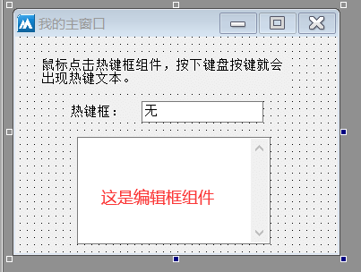
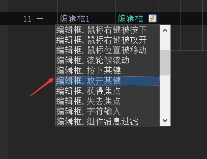
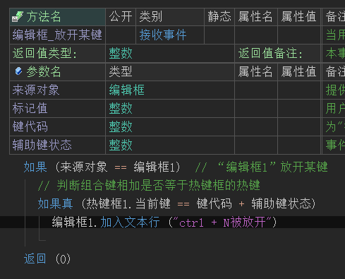
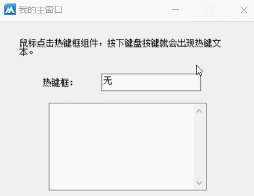

作者：创世魂
● 概述
本组件的主要作用就是用来显示热键信息，比如：你按下键盘上的ctrl键，在本组件上就会显示出ctrl的文本。
如果不按任何键，这个组件上则会默认显示“无”。
下面利用热键框的“当前键”属性，来实现一个简单的组件热键设置。
● 实现简单的热键操作
界面设计如下图：
打开界面设计器，放一个热键框组件和编辑框组件。
最终想要达到的效果就是，热键框中的热键信息和编辑框的热键一致。

代码编写如下图：
1、首先添加编辑框组件的“放开某键”事件。

2、添加后判断来源对象是不是要监听热键的编辑框。
3、最后取出热键框组件的“当前键”，判断这个键值是不是等于“键代码+辅助键状态”。
4、如果相等就表示编辑框的按键事件与热键框显示的热键一致，然后就可以进行其它操作。

运行效果如下图：
1、首先鼠标点击热键框组件，然后按键盘上的“ctrl”键和“N”键。
2、然后鼠标点击编辑框组件，按下同样的按键，就会提示信息，证明编辑框的放开某键事件已经和热键框同步。
注意：需要注意的是，这个热键只是针对编辑框组件的热键，并不是全局热键。
